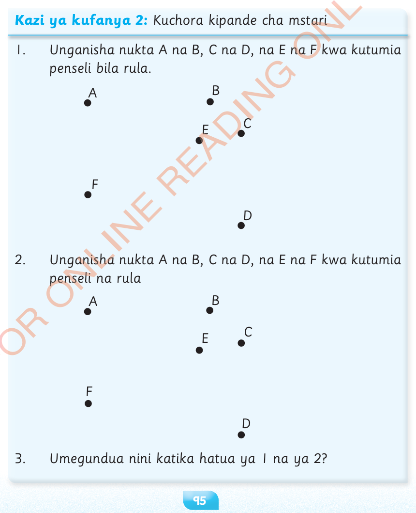

Kipande cha mstari
Kipande cha mstari ni mstari mnyoofu unaounganisha nukta mbili tofauti.
Kipande cha mstari kinaweza kupimwa urefu wake kupitia umbali uliopo kati ya nukta mbili za mwisho.
Kipande cha mstari kinachounganisha nukta A na B huandikwa AB au BA.
Kuchora kipande cha mstari
Kazi ya kufanya 2:

1.Unganisha nukta A na B, C na D, na E na F kwa kutumia penseli bila rula.
ABCDEF
2.Unganisha nukta A na B, C na D, na E na F kwa kutumia penseli na rula
ABCDEF
3.Umegundua nini katika hatua ya 1 na ya 2?